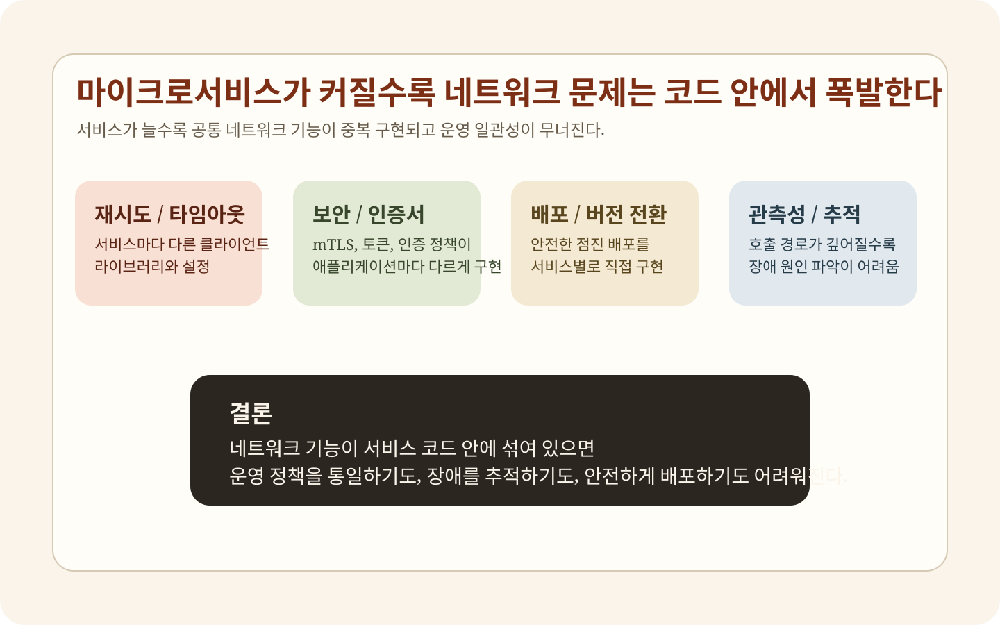
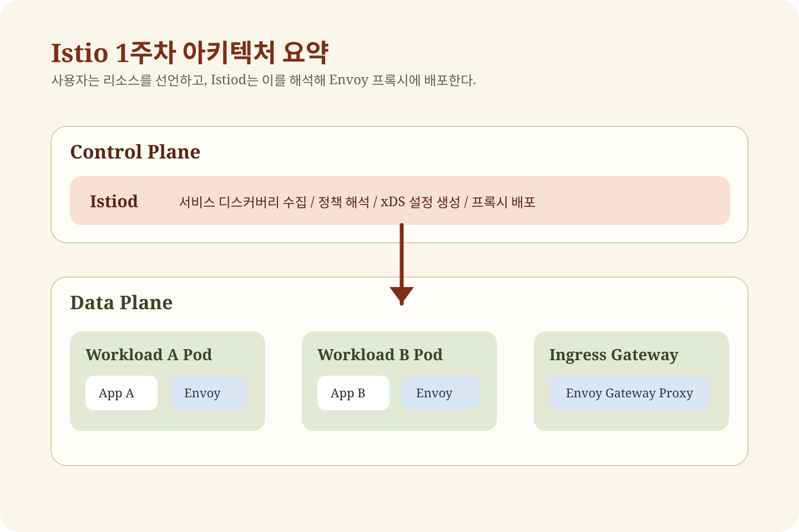
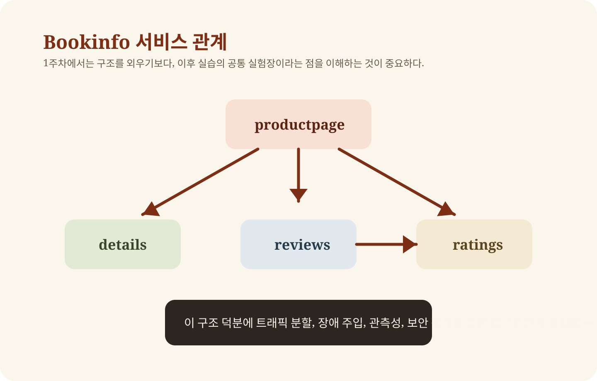
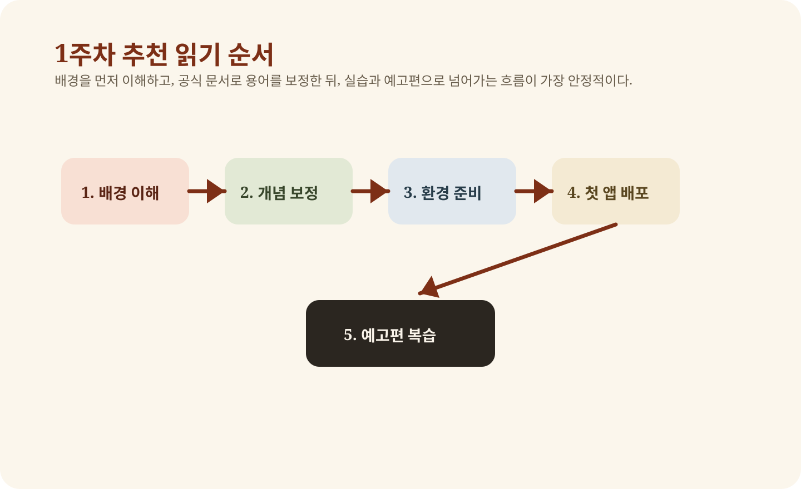

많은 입문자가 Istio를 처음 접할 때 바로 YAML부터 본다. 그런데 그렇게 시작하면 거의 반드시 헷갈린다. `VirtualService`, `DestinationRule`, `Gateway` 같은 이름은 보이는데, 왜 이런 리소스가 필요한지 감이 잡히지 않기 때문이다. 그래서 1주차는 기능 나열보다 먼저, `문제가 무엇이었고 Istio는 그 문제를 어떤 구조로 푸는가`를 이해하는 데 집중해야 한다.
Istio는 Kubernetes 위에 얹는 또 하나의 배포 도구가 아니다. 서비스 간 통신에서 반복적으로 나타나는 라우팅, 복원력, 보안, 관측성 문제를 플랫폼 계층에서 다루기 위한 운영 도구다.
1. 마이크로서비스가 커질수록 왜 통신이 문제로 바뀌는가
단일 애플리케이션에서는 네트워크 문제가 상대적으로 단순하다. 내부 함수 호출과 로컬 메모리 접근이 많고, 장애의 경계도 비교적 분명하다. 하지만 마이크로서비스 구조로 넘어가면 상황이 바뀐다. 하나의 사용자 요청이 여러 서비스 호출로 쪼개지고, 그 과정에서 지연 시간, 재시도, 인증, 장애 전파, 버전 전환, 로그 추적 문제가 전부 네트워크 계층으로 모이기 시작한다.
Notion 스터디에 연결된 1주차 블로그들이 공통적으로 강조한 지점도 여기다. 마이크로서비스의 장점은 기능 분리와 배포 독립성이지만, 대가로 운영 복잡도가 급격히 오른다. 특히 다음 네 가지가 반복해서 문제를 만든다.
- 서비스마다 다른 재시도, 타임아웃, 로드 밸런싱 정책
- 버전 전환 시 트래픽을 안전하게 분배하기 어려움
- 서비스 호출 경로가 깊어질수록 장애 원인 추적이 어려움
- 서비스 간 인증과 암호화를 각 애플리케이션이 제각각 구현함

2. Service Mesh는 무엇을 바깥으로 끌어내는가
Service Mesh의 핵심은 간단하다. `서비스 간 통신에서 반복되는 공통 기능을 애플리케이션 코드 밖으로 빼내는 것`이다. 재시도, 타임아웃, 로드 밸런싱, mTLS, 접근 제어, 메트릭 수집, 분산 추적 같은 기능은 비즈니스 로직과 직접 관련이 없다. 그런데 이 기능들을 각 언어와 프레임워크에서 개별 구현하기 시작하면 운영팀은 사실상 같은 문제를 여러 번 푸는 상태가 된다.
그래서 Service Mesh는 서비스 옆에 프록시를 두고, 모든 통신을 그 프록시가 통과하게 만든다. 그 다음 중앙 제어면이 각 프록시에 동일한 규칙을 내려준다. 그러면 운영 정책을 코드가 아니라 인프라 리소스로 관리할 수 있다.
Service Mesh는 서비스 호출 자체를 없애는 기술이 아니라, 서비스 호출을 플랫폼이 통제 가능한 대상으로 바꾸는 기술이다.
3. Envoy는 왜 그렇게 자주 등장하는가
1주차 자료를 읽다 보면 거의 모든 설명이 Envoy로 수렴한다. 이유는 단순하다. Istio의 데이터 플레인은 대부분 Envoy가 담당하기 때문이다. Envoy는 단순한 TCP 프록시가 아니라, 정책을 집행하는 실행기다. Istio가 라우팅을 바꾸고, 재시도를 넣고, 타임아웃을 적용하고, 메트릭을 내보내고, mTLS를 수행하는 실제 현장은 대부분 Envoy 안에서 일어난다.
이 점이 중요하다. 초심자는 Istio를 보면 컨트롤 플레인 쪽 YAML에만 집중하기 쉽지만, 실제 요청을 받아 처리하는 것은 Envoy다. 즉, Istio 리소스는 선언이고, Envoy는 실행이다.
- 요청을 어느 버전으로 보낼지 결정한다
- 재시도와 타임아웃을 집행한다
- 서비스 간 TLS 통신을 수행한다
- 메트릭과 트레이싱 데이터를 만든다
4. Istio 아키텍처를 1주차 수준에서 이해하는 가장 좋은 방법
1주차에서 아키텍처를 지나치게 복잡하게 볼 필요는 없다. 우선 `control plane`과 `data plane`을 분리해 이해하면 된다. data plane은 각 워크로드 옆에서 실제 트래픽을 처리하는 Envoy 집합이고, control plane은 그 프록시들이 어떤 규칙으로 동작해야 하는지 알려주는 Istiod다.

여기서 중요한 흐름은 다음과 같다.
- 사용자가 애플리케이션과 Istio 리소스를 Kubernetes에 배포한다.
- Istiod가 서비스 정보와 정책을 읽는다.
- Istiod가 각 Envoy에 필요한 설정을 만든다.
- Envoy는 실제 서비스 요청을 이 설정에 따라 처리한다.
이 네 단계만 이해해도 뒤 주차에서 나오는 대부분의 리소스가 덜 낯설어진다.
5. 사이드카 주입이 왜 중요하고 왜 나중에 부담이 되는가
1주차의 첫 실습 핵심은 `사이드카가 붙는 경험`이다. Istio의 전통적인 동작 방식은 애플리케이션 파드 옆에 Envoy 컨테이너를 함께 넣는 것이다. 이걸 sidecar injection이라고 한다. 그러면 해당 워크로드의 인바운드, 아웃바운드 트래픽이 프록시를 거치게 되고, 메시 기능을 애플리케이션 수정 없이 적용할 수 있다.
그런데 이 방식은 동시에 비용도 만든다. 파드마다 프록시가 붙으면 메모리와 CPU를 더 쓰고, 운영 복잡도가 늘어난다. 나중에 `Ambient Mesh`가 등장하는 이유도 바로 이 비용을 줄이기 위한 고민 때문이다. 즉, 1주차에 사이드카를 배우는 것은 단지 설치 절차를 배우는 것이 아니라, Istio가 어떤 철학으로 출발했는지 이해하는 과정이다.
6. 왜 Bookinfo를 첫 예제로 쓰는가
Bookinfo는 단순한 데모가 아니다. productpage, details, reviews, ratings처럼 서로 호출 관계가 있는 서비스로 구성돼 있어 메시 기능을 보여주기 좋다. 1주차에서는 이 구조를 `그냥 띄워보는 것`으로 끝내면 안 된다. 이후 3주차의 트래픽 분할, 4주차의 관측성, 5주차의 보안까지 거의 같은 앱이 재사용되기 때문이다.

1주차에서 최소한 아래는 설명할 수 있어야 한다.
- productpage가 어떤 백엔드를 호출하는가
- reviews 서비스 버전이 왜 여러 개인가
- 게이트웨이가 붙으면 외부 사용자는 어디로 접속하는가
- 사이드카 주입 전후에 파드 구성이 어떻게 달라지는가
7. 1주차 실습은 어디까지 해야 하는가
1주차 실습은 욕심내지 않는 것이 중요하다. 여기서 트래픽 미러링이나 세밀한 보안 정책까지 들어가면 흐름이 무너진다. 목표는 딱 다섯 가지다.
- 클러스터를 준비한다.
- Istio를 설치한다.
- Bookinfo를 배포한다.
- Bookinfo를 외부에서 호출해본다.
- 사이드카와 기본 메시 구조를 확인한다.
저장소에는 실습을 위한 기본 파일을 이미 넣어뒀다. `week1/practice/`를 보면 된다. 다만 원래 수집한 스터디 글 중 일부는 `Istio 1.17.8` 기준 예제다. 개념 흐름은 충분히 참고할 가치가 있지만, 실제 실행 명령은 최신 문서와 맞춰보는 습관이 필요하다.
cd week1/practice
# kind 클러스터 준비
# Istio 설치
# Bookinfo 배포
# Gateway 적용
8. 1주차 자료는 어떤 순서로 읽어야 가장 덜 헷갈리는가
1주차 자료를 한꺼번에 다 읽으면 오히려 흐름이 섞인다. 다음 순서가 가장 낫다.

- 배경 이해: kschoi728의 309, 310 글로 왜 Istio가 필요한지 잡는다.
- 공식 개념 보정: Istio Overview 문서로 용어를 정리한다.
- 실습 환경: 315, 316으로 kind와 설치 흐름을 본다.
- 첫 실습: 317, 318과 practice 디렉터리로 Bookinfo까지 간다.
- 가벼운 예고편: 319, 320, 321은 깊게 파지 말고 다음 주차의 맛보기로만 본다.
9. 1주차에서 자주 생기는 오해
Istio는 그냥 Ingress 툴 아닌가
아니다. 게이트웨이는 표면에 드러나는 일부일 뿐이다. Istio의 중심은 서비스 간 트래픽과 정책을 통제하는 메시 구조다.
사이드카만 붙이면 자동으로 모든 것이 해결되나
아니다. 사이드카는 기능을 적용할 기반을 제공할 뿐이고, 실제 정책은 이후 주차에서 배우는 라우팅, 보안, 관측성 리소스로 명시해야 한다.
1주차에서 Observability, Resiliency, Routing을 다 끝내야 하나
아니다. 1주차에서는 그 기능들이 `존재한다`는 감각만 잡으면 충분하다. 실제 심화는 각 주차에서 따로 보는 것이 맞다.
10. 1주차 종료 체크리스트
- Service Mesh가 왜 필요한지 스스로 설명할 수 있다
- Envoy와 Istiod의 역할을 구분해 설명할 수 있다
- control plane과 data plane의 차이를 설명할 수 있다
- 사이드카 주입이 왜 필요한지 설명할 수 있다
- Bookinfo 서비스 관계를 말할 수 있다
- 다음 주차에서 Envoy와 Gateway를 왜 더 깊게 배우는지 연결할 수 있다
11. 이 글을 구성한 자료
이 페이지는 아래 공개 자료를 바탕으로 재구성했다. 원문은 저장소 안의 보관본으로도 남겨두었다.
- Notion 스터디 모음: `downloads/notion/notion-study-index.html`
- kschoi728 1주차 시리즈: `week1/sources/kschoi728-309.html`, `310.html`, `315~321.html`
- kimdoky week1: `week1/sources/kimdoky-week1.html`
- Istio Overview: `week1/sources/istio-overview.html`
- Istio Getting Started: `week1/sources/istio-getting-started.html`